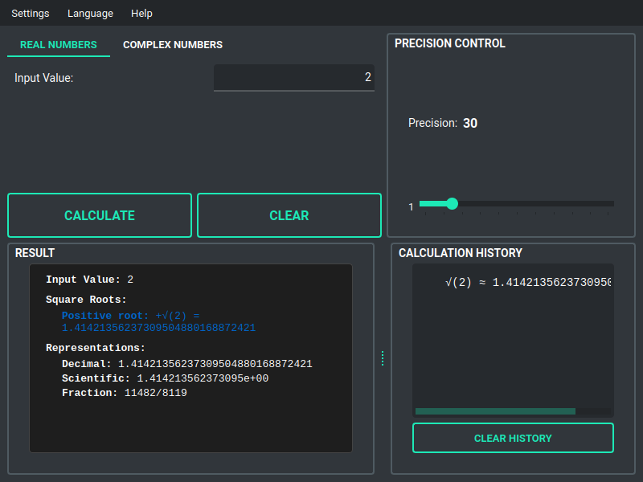
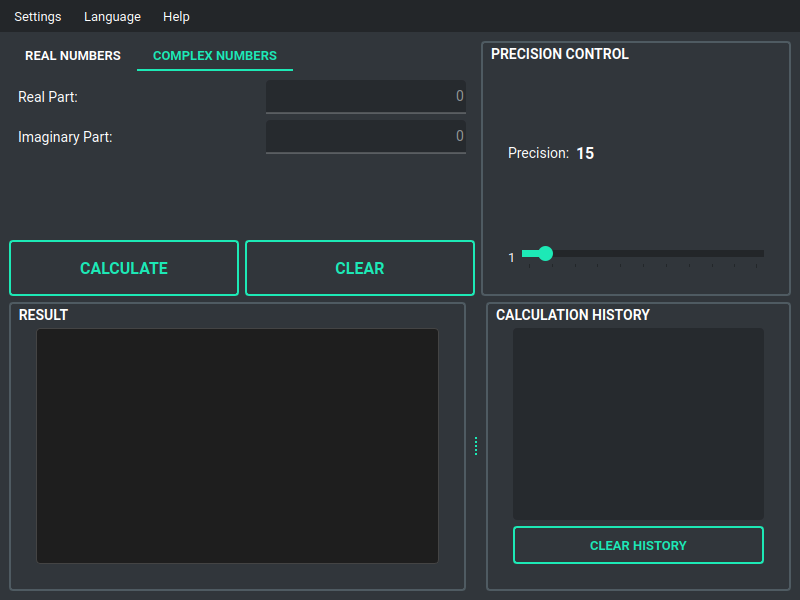

1. Initial Interface (English)
The main window showing the real number mode with English interface. Users can enter a number and set precision.

The main window showing the real number mode with English interface. Users can enter a number and set precision.
The same interface in Russian, demonstrating multilingual support (Многоязычная поддержка).

Calculating the square root of 2 with 30 decimal places precision, showing the irrational number result.
Computing the square root of 123,456,789 with 20 decimal places precision.

Switching to complex number mode, showing separate input fields for real and imaginary parts.
Calculating the square root of the complex number 3+4i, resulting in 2+1i.

Computing √(-1) in complex mode, correctly returning 0+1i (the imaginary unit i).